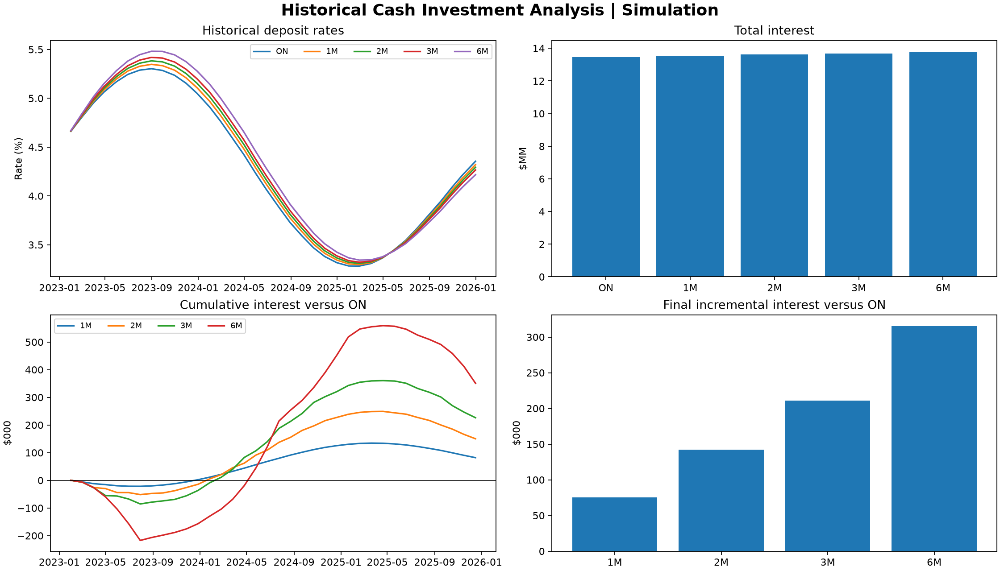

VBA version 3
Reconstruct and download the corrected VBA module directly in the browser.
Download VBA v3An Excel and VBA model for ON, 1M, 2M, 3M and 6M deposits. Version 3 corrects the chart timeline, rebuilds daily reinvestment risk from the curve and describes every historical efficient-frontier point.
Reconstruct and download the corrected VBA module directly in the browser.
Download VBA v3Corrected date logic, uploaded-curve results, reset statistics and validation.
Read v3 resultsInputs, conventions, methodology and Excel instructions.
Read READMEAutomated deterministic tests for the public model structure.
View testsRates_Analysis_Final_v3.bas through the VBA editor.CreateBlankRatesModel.Date | ON | 1M | 2M | 3M | 6M.BuildRatesAnalysisModel.